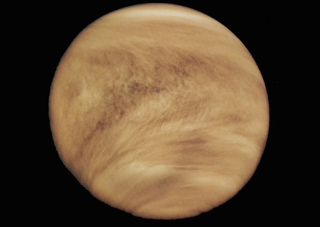
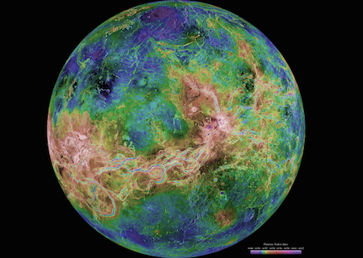

Venus
Structure and Surface
- Venus is the hottest planet in our solar system.
- Venus is a terrestrial planet. It is small and rocky.
- Venus has a thick atmosphere. It traps heat and makes Venus very hot.
- Venus has an active surface, including volcanoes!
- Venus spins the opposite direction of Earth and most other planets.
Time on Venus
- A day on Venus lasts 243 Earth days.
- A year on Venus lasts 225 Earth days.
Venus's Neighbors
- Venus does not have any moons.
- Venus is the second planet from the Sun. That means Mercury and Earth are Venus's neighboring planets.
Quick History
- Venus has been known since ancient times because it can be seen easily without a telescope.
- Venus has been visited by several spacecraft: Mariner 2, Mariner 5, Mariner 10, Pioneer Venus 1, Pioneer Venus 2, and an orbiter called Magellan.
What does Venus look like?
Here you can see the clouds covering Venus.
This is a combination of images taken by the Magellan spacecraft. The colors have been altered so you can see all the differences in Venus's surface. Magellan used radar to get information about the surface of Venus, which we can't normally see because of the thick, cloudy atmosphere.

A crater on the surface of Venus. It's 45 miles (72 km) wide.